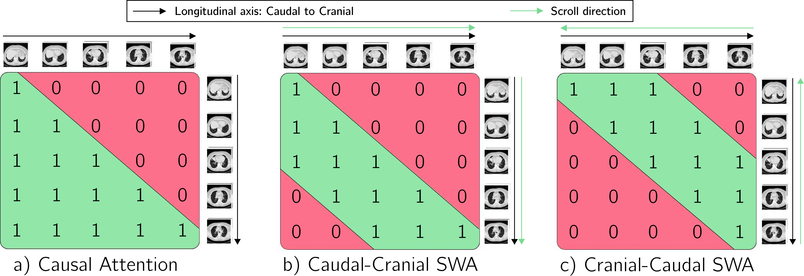
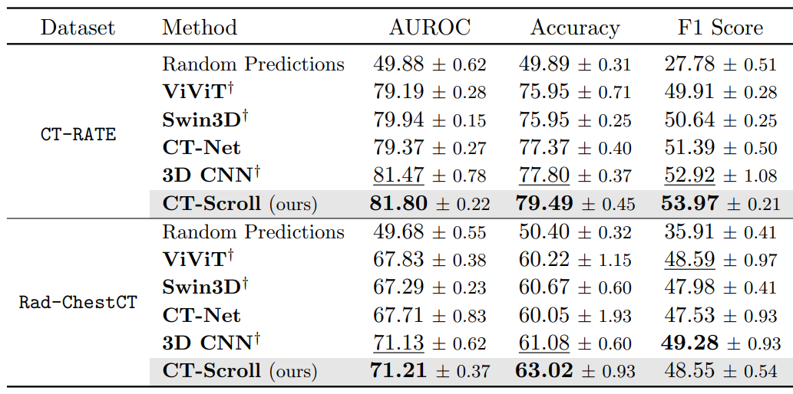
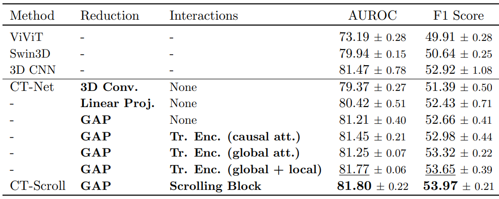
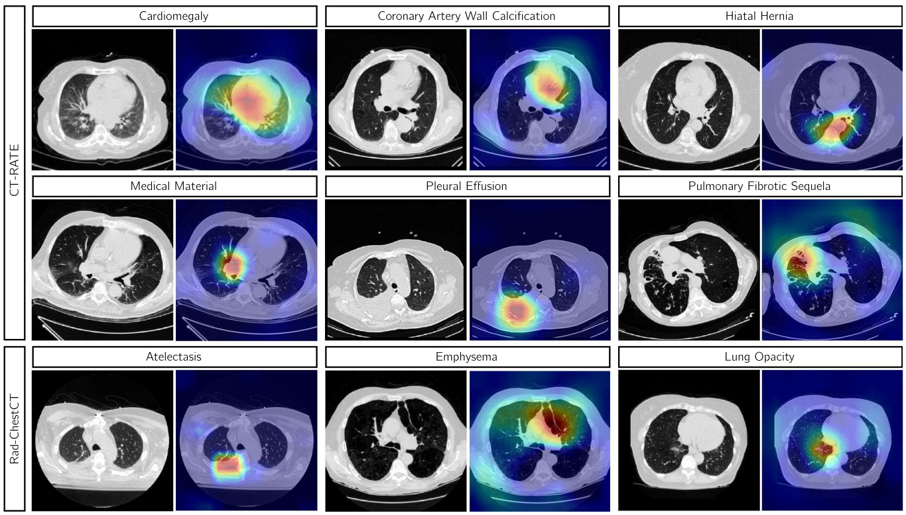
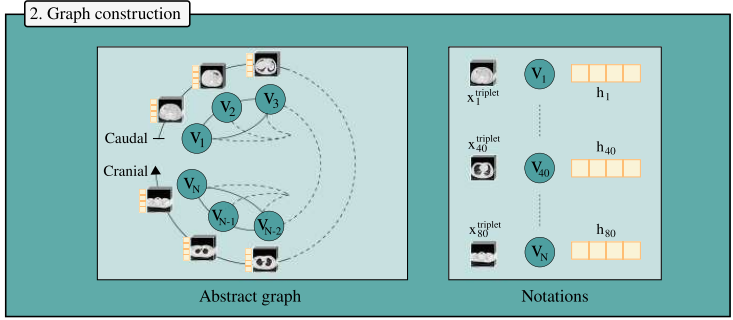
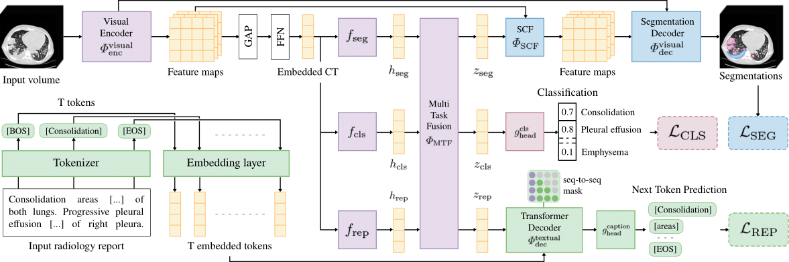

CT-AGRG
ISBI 2025
Report generation
The CT-Scroll architecture consists of three main components. (1) Axial slices of the volume are grouped into triplets and processed by a ResNet followed by a GAP layer, producing a vector representation per triplet. (2) The Scrolling Block then refines these embedded visual tokens using both global and local attention mechanisms. (3) Finally, the aggregated features are fed into a classification head to predict abnormalities.


Models are trained and evaluated on CT-RATE across 5 independant runs, using train/validation/test patient-level splits (85/15). CT-RATE trained models are evaluated on the external RAD-ChestCT, focusing on the 16 abnormalities shared across datasets.
CT-Scroll is compared against attention-based visual encoders with ViViT and Swin3D. We also include convolutional backbones, including the 2.5D CT-Net and a volumetric convolutional neural network (CNN). All visual encoders are initialized using ImageNet pre-trained weights: we use a 2D ViT-S for ViViT, a 2D Swin-S for Swin3D and a 2D ResNet18 for CT-Net, 3D CNN and CT-Scroll We report AUROC, Accuracy and F1-Score on the multi-label abnormality classification task.

Key findings:
In domain, CT-Scroll achieves the best results across all merics, demonstrating an improvement +5.02% in F1-Score over CT-Net. CT-Scroll demonstrates strong generalization under distribution shift, achieving the best AUROC and Accuracy on the external RAD-ChestCT.
To evaluate the effectiveness of the proposed Scrolling Block, we compare its performance against various aggregation modules and masking strategies. For the aggregation modules, feature maps extracted from the 2D triplet-wise module are concatenated and given to i) a 3D convolutional neural network, ii) a linear projection and iii) a global average pooling operation over all dimensions. For the masking strategy, the causal-cranial and the cranial-caudal sliding windows attention are replaced by i) a causal attention mask, ii) a global attention mask, and iii) alternating global-local attention masks.

Key findings:
The Scrolling Block consistently outperforms alternative aggregation modules. These results suggest that jointly modeling short- and long-range dependencies across triplets of axial slices through an attention-based mechanism improves the representation of both global context and fine-grained anatomical details, ultimately leading to superior classification performance.
We further visualize CT axial slices using Grad-CAM activation maps extracted from the final layer of the 2D ResNet module within CT-Scroll. These results highlight CT-Scroll's ability to identify abnormalities from relevant regions.

In this work of academic research, our experiments are run on public Computed Tomography datasets. We acknowledge contributors from CT-RATE [1] and RAD-ChestCT [2] for releasing the datasets to the research community.
[1] Generalist foundation models from a multimodal dataset for 3D CT. Hamamci et al. 2026.
[2] Machine-learning-based multiple abnormality prediction with large-scale chest CT volumes. Draelos et al. 2021.
@article{dipiazza_2025_ctscroll,
author = {Di Piazza, Theo and Lazarus, Carole and Nempont, Olivier. and Boussel, Loic},
title = {Imitating Radiological Scrolling: A Global-Local Attention Model for 3D Chest CT Volumes Multi-Label Anomaly Classification},
booktitle = {Medical Imaging with Deep Learning (MIDL)},
year = {2025},
}Explore additional recent work in medical image analysis related to this project.
CT-AGRG
ISBI 2025
Report generation

CT-SSG
MELBA Journal 2026
Graph representation learning

UniCT
MICCAI 2026
Multi-task learning